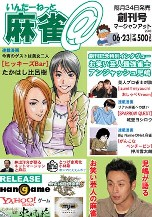

ネットへ接続している人ならすでにご存じの麻雀雑誌。'06の６月に.創刊号が、８月には２号が刊行されている。

惹句によれば、“数百万人とも云われるネット麻雀人口を対象に、より多くの情報を発信することを考えたオンライン麻雀情報誌”とのこと。
以前 数誌あった麻雀雑誌もすでに休刊や廃刊となり、いまや麻雀雑誌といえばコミック誌の「近代麻雀」とその系列誌しかない。そんな中で創刊された麻雀専門誌、今後も継続的に刊行されれば、それに越したことはない。
とは云うものの、麻雀雑誌なので「麻雀プロ」が登場するのはいいとして、お笑い芸人が「テレビの麻雀番組に出たいと思ってプロテストを受けた。プロ団体の幹部と麻雀したことがあったので、実技免除でプロ認定して貰いました」（創刊号）なんて話は、面白いと云えば面白いが一生懸命やってる人が怒らないのか。
麻雀マンガにかなりのスペースを割いて力を入れている。それはいいが、やはり麻雀マンガは近代麻雀のようにストーリーマンガでないと面白味がイマイチ。
細かくいうとまだまだ感想はいっぱいあるけれど、全体的な印象はマニア向けでもなければ、初心者向けでもない。正直言って、コンセプトがどこにあるのかよく分からない。てなわけで「麻雀＠」には“今後に期待”。
|